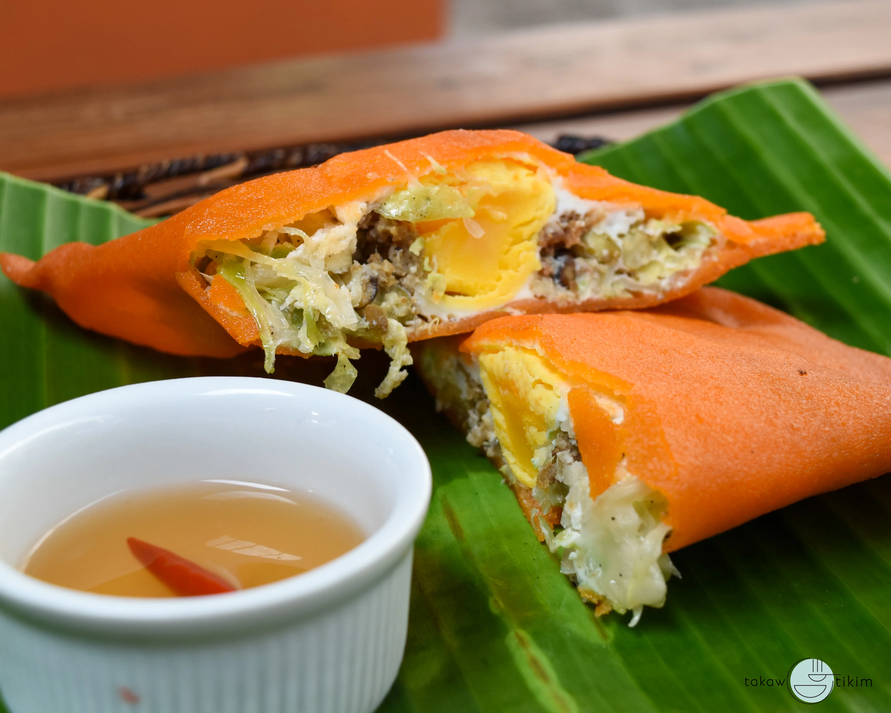

(Discover the Beauty of the North)

Batac Empanada: Originating from Batac City in Ilocos Norte, this empanada has a distinct bright orange color in its rice flour dough, thanks to the use of annatto seeds. It's typically filled with green papaya, mung beans, chopped Ilocano longganisa (sausage), and a hard-boiled egg, then deep-fried to a crispy finish.